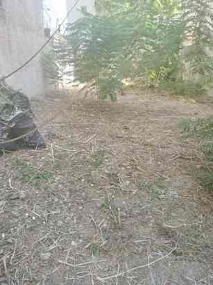
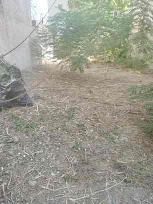

Μέχρι 31 Μαρτίου 2026: Καθαρισμός οικοπέδου 200τμ μόνο 120€ και 400τμ μόνο 200€
Τιμές καθαρισμού οικοπέδου
Κόστος καθαρισμού οικοπέδου
Μάθετε τα πάντα για το κόστος καθαρισμού του οικοπέδου σας και τους παράγοντες από τους οποίους επηρεάζεται. Προγραμματίστε εγκαίρως
την εργασία ώστε να αποφύγετε τα τσουχτερά πρόστιμα
Στείλτε 2 φωτογραφίες και τοποθεσία Google Maps για να λάβετε άμεσα προσφορά για καθαρισμό οικοπέδου / αποψίλωση μέσα στην ημέρα.
Οι Υπηρεσίες μας
Καθαρισμός οικοπέδων
Αναλαμβάνουμε καθαρισμό οικοπέδων σε όλη την Αττική, από βλάστηση, σκουπίδια και απορρίμματα. Ιδανικό για συμμόρφωση με κανονισμούς πυροπροστασίας & αισθητική αναβάθμιση.
Απομάκρυνση χόρτων & απορριμμάτων
Συλλογή & μεταφορά απορριμμάτων με ειδικά οχήματα και εργαλεία, με σεβασμό στο περιβάλλον.
Κοπή χόρτων & κλαδέματα
Κοπή χόρτων, κλάδεμα δέντρων και θάμνων. Εφάπαξ ή τακτικές υπηρεσίες ανάλογα με τις ανάγκες σας.
Γιατί να μας επιλέξετε
Άμεση εξυπηρέτηση
Ταχύς προγραμματισμός εργασιών σε όλη την Αττική.
Έμπειρο προσωπικό
Η ομάδα μας διαθέτει πολυετή εμπειρία & σύγχρονα μηχανήματα, για άριστο αποτέλεσμα.
Οικονομικές τιμές
Διαφάνεια, χωρίς κρυφές χρεώσεις. Εκμεταλλευτείτε τις ειδικές μας προσφορές.
 
